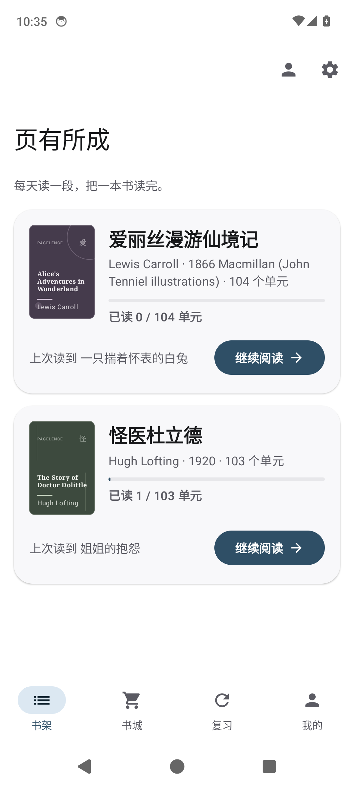
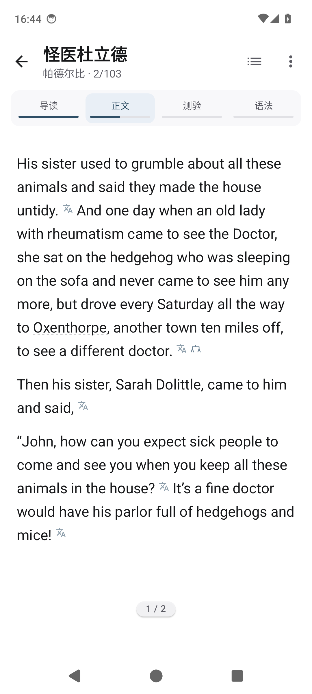
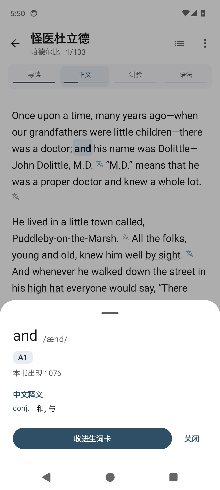

点词即查
音标、A1–C2 等级、本书出现次数、语境义与两套离线词典；dogs 这样的屈折形按原形 dog 取义。
Android · 本地优先 · 无需账号
页有所成（Pagelence）把一本英文原版书切成五分钟一个的短读单元：读一个情节片段，顺手学一点词汇、短语、语法或背景知识。
给学过英语、很久没用、总在第三章停下的成年人。
A local-first Android reader for finishing English books, five minutes at a time.

约 5 分钟 / 单元
五分钟，一段路
每个单元以书里的自然停顿为界，五分钟左右读完；读不完也没关系，下次回到离开的那一页。
中英双语的一段引子，告诉你接下来会发生什么；预习里先挑几个本书等级的生词，认识了再进正文。
点词看音标、等级、语境义与本书出现次数；每个句末有一个小图标，点开才展开中文句译，不挡原文。
一两道选择题确认读懂，再从本书原句里看一个语法点。这一单元没有语法，就直接进入下一段。
为读下去而做
需要的时候点一下，不需要就继续读。所有解释都从当前这一句、这一段里长出来。
音标、A1–C2 等级、本书出现次数、语境义与两套离线词典；dogs 这样的屈折形按原形 dog 取义。
每句末尾一个「文A」小图标，点开才在句下展开中文；没有句译的句子不显示图标，不用机器翻译充数。
点一下收进生词卡。复习时先看词面回忆，再看释义与原文语境；同一本书里按原形归并。
每个语法点都配本书原句，按「点 → 例 → 析」展开：讲结构、作用与易错处，不背脱离上下文的规则。
界面语言与词义语言分开设置，可以从中文解释慢慢过渡到英文解释；等级只调默认值，不锁任何单元。
不注册账号，没有广告、埋点或崩溃上报；联网只发生在书城刷新目录、下载书籍或导入线上书源时。
界面
默认按屏幕分页，也可以改成上下滑动；字号四档，退出后回到离开的那一页。


内置书库
只选作者去世多年、在多数地区已进入公有领域的作品；正文随安装包提供，开箱可读。
A2 21 章 · 103 段
The Story of Doctor Dolittle · Hugh Lofting，1920
一位能听懂动物说话的乡村医生，带着一屋子动物出海，去非洲治一场猴子瘟疫。第一本从 A2 起步，句子短，情节推着人往下读。
全书完整 · 导读、句译、测验与语法齐备
B1 12 章 · 104 段
Alice's Adventures in Wonderland · Lewis Carroll，1866 Macmillan（John Tenniel 插图）
掉进兔子洞的女孩，在一个讲不通道理的世界里一路追问：我是谁，这里为什么这样。第二本到 B1，句子变长，玩笑和双关也多起来。
全书完整 · 1,359 句句译 · 104 则语法
另有 210 道 A1–C2 测评题与 256 条语法库随包提供，用于自评与复习。
下载
0.2.0 起普通版与墨水屏版一起发布：两本书的正文、导读、句译、测验与语法都已完整，墨水屏版新增目录、书签与笔记、内联字号与行距，界面和内容仍会继续调整。
普通版 SHA-256 3471dd021052acb317fa9862549f9087989448e56198ba677a4d683f5e7b776c
墨水屏版 SHA-256 cf934367e94c5d4d76442f0a449627faa33317e8025edcdb602e3f41a33850c5
按设备选普通版或墨水屏版 APK，下载到手机后打开。
系统会提示一次「安装未知应用」，允许后继续安装。
打开应用，选一个 CEFR 等级，就能从书架开始读。
两个 APK 用同一发布密钥签名，可分开安装、独立升级；覆盖升级保留进度，卸载会把该应用的本地进度与生词卡一起删掉。普通版与墨水屏版的进度各存本机，可在「同步与备份」里通过 WebDAV 或导出 JSON 互通。
隐私
应用不注册账号，不接入广告、统计或崩溃上报 SDK。阅读进度、生词卡和偏好只保存在应用私有目录的一份状态文件里，卸载即删。
唯一会联网的场景：书城刷新目录、下载书籍包、导入线上书源，以及你自己点开官网或 GitHub。应用不会在后台检查更新。